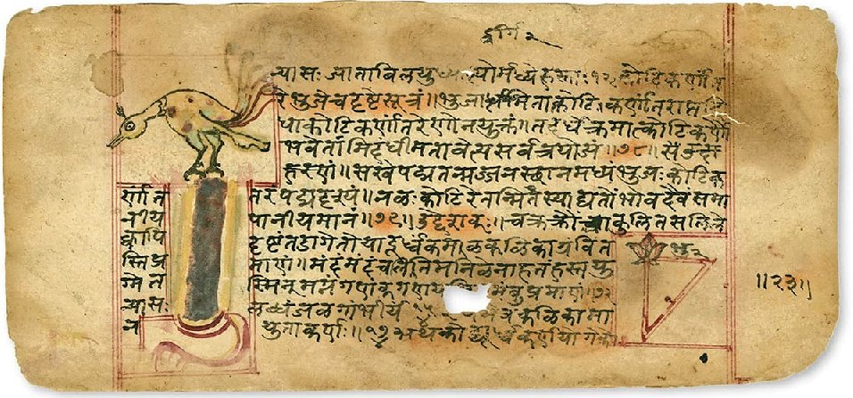

summer 2025: fc-0306

A page from a manuscript of Lilavati (1650 edition).
Course Outline and Lectures:
The following is a tentative outline for the classes, lectures, and required reading for the course.
| Date | Module | Lecture | Description | Reading |
|---|---|---|---|---|
| Jul 7 | 1 | 1 | Introduction, Logistics, and Overview | Articles I and II |
| Jul 8 | 2 | Mathematics in the Ancient World | Article III | |
| Jul 9 | 3 | Mathematics in the Vedic Age | Article IV and V | |
| Jul 10 | 4 | More Geometric Constructions | ||
| Jul 14 | 5 | What is Vedic about Vedic Mathematics? | Article VI | |
| Jul 15 | 2 | 6 | Is NASA Programming in Sanskrit? | Article VII and VIII, Tool I |
| Jul 16 | 7 | The Chhandashastra of Pingala | Article IX | |
| Jul 17 | 8 | The Principle of Mathematical Induction | ||
| Jul 21 | 3 | 9 | The Aryabhatiya of Aryabhata | |
| Jul 22 | 10 | The Brahmasphutasiddhanta of Brahmagupta | ||
| Jul 23 | 11 | Mathematics of India in Translation | ||
| Jul 24 | 4 | 12 | The Leelavati of Bhaskaracharya | |
| Jul 28 | 13 | The Bijaganita of Bhaskaracharya | ||
| Jul 29 | 14 | The Kuttaka Algorithm | Article X | |
| Jul 30 | 15 | The Bhavana Method | Article XI, XII, and XIII. | |
| Jul 31 | - | - | Midterm Exam | |
| Aug 4 | 5 | 16 | The Kerala School of Mathematics | |
| Aug 5 | 17 | Development of Calculus in India | ||
| Aug 6 | 18 | Development of Trigonometry in India | ||
| Aug 7 | 19 | Proofs in Indian Mathematics | ||
| Aug 11 | 6 | 20 | Prime Numbers | |
| Aug 12 | 21 | The Works of Srinivasa Ramanujan | ||
| Aug 13 | 22 | AKS Primality Testing | ||
| Aug 14 | - | - | Fire Altar Construction |